Walk through ChooseMyStat step by step to choose the right test and calculate the sample size for a pre-post yoga intervention study.
Dr. Sharma, a PG resident in Community Medicine at a tertiary hospital (AIIMS-like setting), wants to study whether a 12-week structured yoga programme can reduce systolic blood pressure (SBP) in adults with stage 1 hypertension.
The design is straightforward: measure each patient's SBP before starting yoga, then measure it again after 12 weeks of the intervention. The same subjects are measured twice — a classic pre-post or before-after study.
Go to choose-my-stat.vercel.app. You will see the landing page with a brief introduction to what the app does.
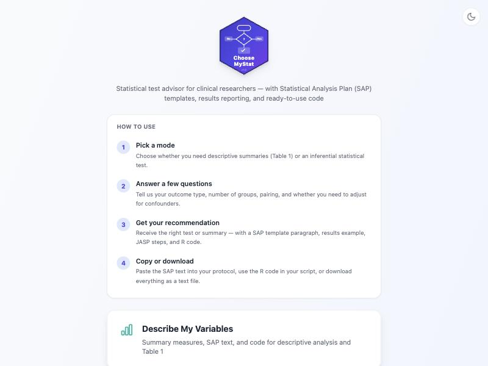
You will see five pathway cards. For most clinical research questions, the first pathway — Comparing Groups / Before-After — is the one you need. This pathway covers t-tests, ANOVA, chi-square, paired comparisons, and more.
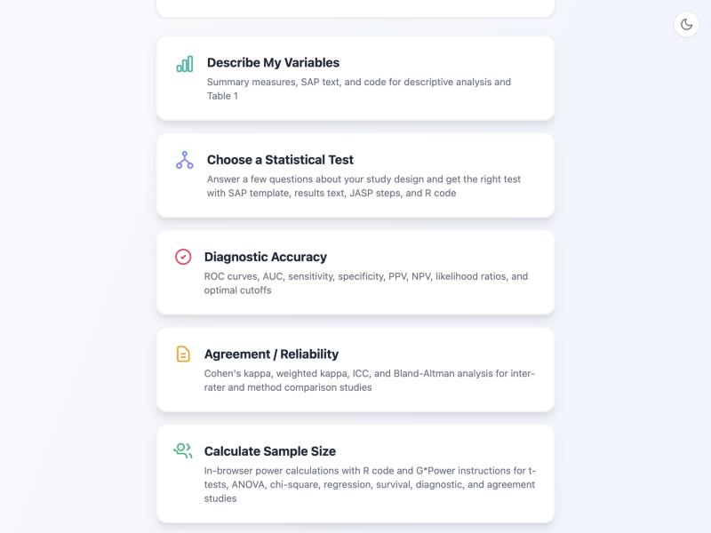
The first question the app asks is: "What type of outcome variable are you measuring?"
Our outcome is systolic blood pressure measured in millimetres of mercury (mmHg). This is a continuous variable — it can take any numeric value within a range and is measured on an interval/ratio scale.
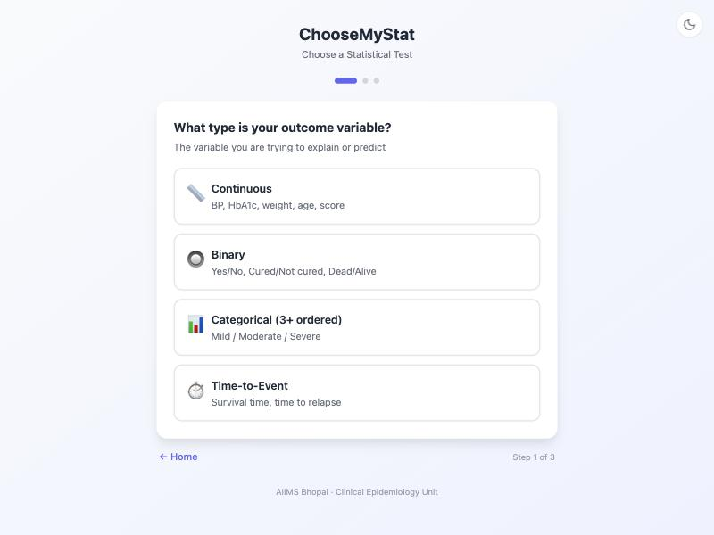
Next, the app asks: "What is the structure of your comparison?"
In our study, the same subjects are measured twice — once before the yoga programme and once after. This is a paired (or before-after) design with two time points.
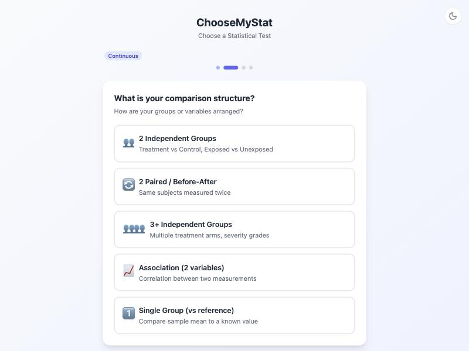
The app now asks: "Are the differences (or the data) approximately normally distributed?"
For the paired t-test, what matters is whether the within-subject differences (post-SBP minus pre-SBP for each patient) follow a roughly normal distribution. Blood pressure differences are generally normally distributed in clinical samples of moderate size (n ≥ 20–30). In our planned study, we expect around 30 subjects, so this assumption is reasonable.
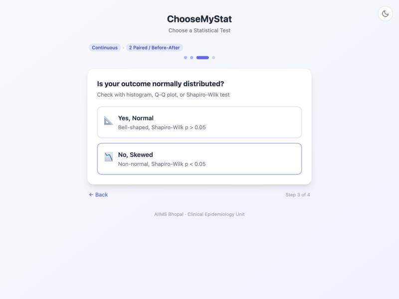
The final question: "Do you need to adjust for confounders or covariates?"
In this simple pre-post study, we are making a straightforward comparison: did SBP change after yoga? We are not adjusting for age, BMI, baseline medication use, or any other variables in this primary analysis.
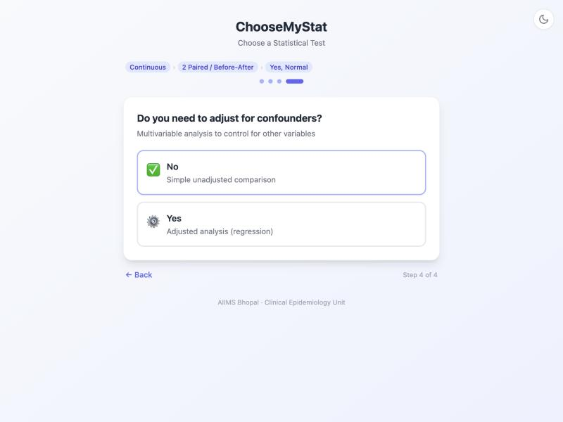
The app now shows you the recommended statistical test: Paired t-test. This is exactly the right test for comparing two continuous measurements taken on the same subjects when the differences are approximately normally distributed.
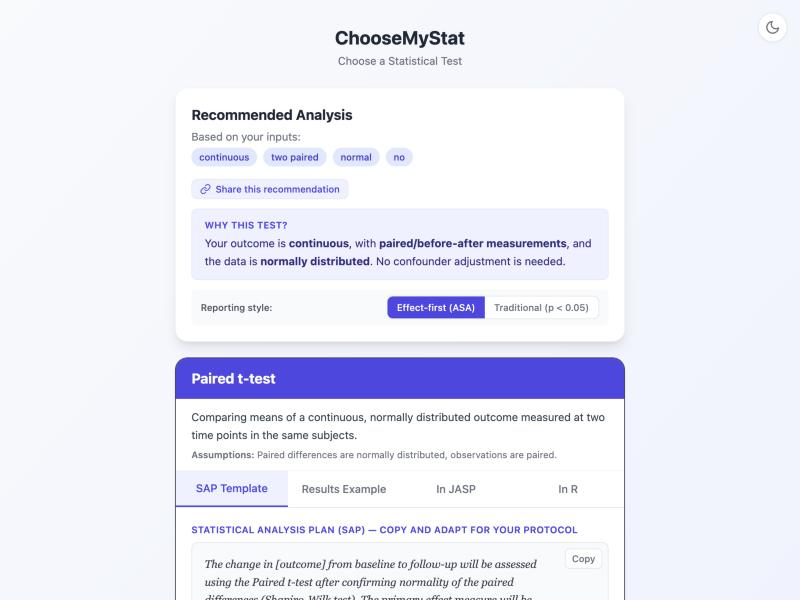
Scroll down on the result page and you will find a SAP (Statistical Analysis Plan) template — a ready-to-use paragraph describing the statistical methods for your protocol or thesis. Below the SAP text, you will see a green "Calculate Sample Size" button.
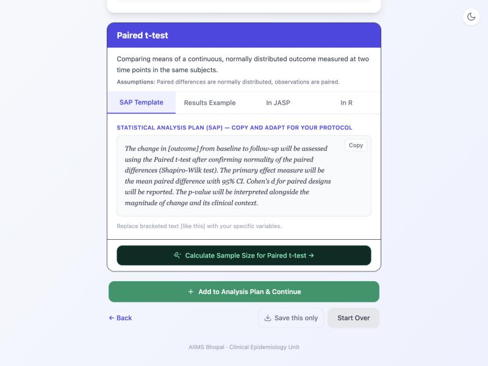
Click the green "Calculate Sample Size" button. A form will appear asking for the inputs needed to calculate the required sample size for the paired t-test.
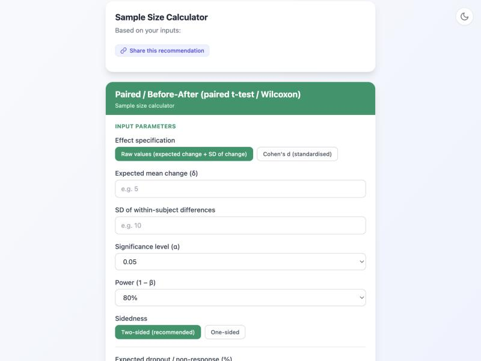
Now fill in the parameters from our study scenario:
| Parameter | Value | Why? |
|---|---|---|
| Mean difference (δ) | 8 mmHg | Expected SBP reduction from Cramer et al. 2014 meta-analysis of yoga RCTs |
| SD of differences | 15 mmHg | Within-subject variability from Hagins et al. 2013 / Indian yoga literature |
| Alpha (α) | 0.05 | Standard 5% significance level (two-sided) |
| Power (1 − β) | 80% | Conventional power for clinical studies |
| Test type | Two-sided | We test for any change (increase or decrease), not just a reduction |
| Dropout / non-response | 15% | To account for loss to follow-up over the 12-week period |
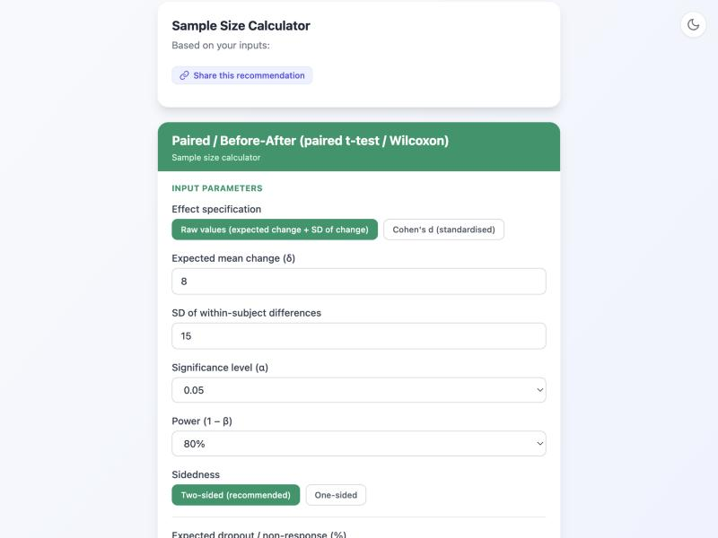
The app calculates:
You need 28 subjects to detect an 8 mmHg reduction in SBP with 80% power at the 5% significance level. After adding 15% to account for dropout, you should recruit 33 patients.
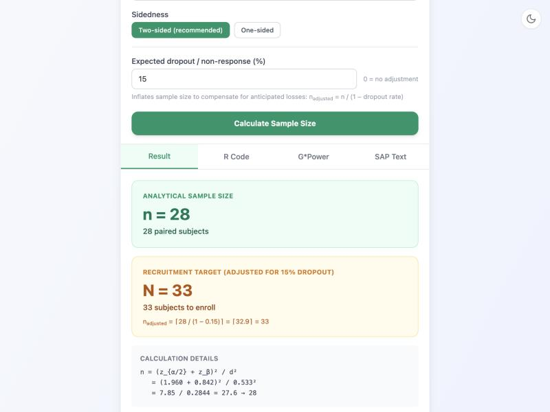
In addition to the test recommendation and sample size, ChooseMyStat provides several ready-to-use outputs that you can directly incorporate into your thesis or protocol:
A pre-written Statistical Analysis Plan paragraph describing your chosen test, assumptions, and sample size justification. Copy it into your protocol.
A template showing how to report the paired t-test results in your thesis, following standard reporting guidelines (mean difference, 95% CI, p-value).
Ready-to-run R code for performing the paired t-test on your data, including data import, assumption checking (Shapiro-Wilk test), and the t-test itself.
Step-by-step instructions for verifying your sample size calculation in G*Power, the free power analysis software frequently requested by ethics committees.
Ready to find the right test for your study?
Try ChooseMyStat Yourself